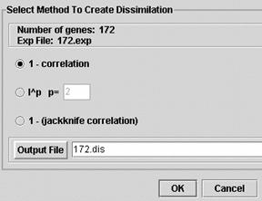

Dissimilarities (Control D)

Calculating dissimilarities allows you to compare different genes to one another. When you do this, a window will appear where you have to choose from three options.
The most common method is the default 1 - correlation (see Instructor's Guide for a detailed explanation of this and the other two methods). When this step is complete, MAGIC generates a dissimilarity file which you can name in the output file box, automatically given the extension ".dis". Click on OK to begin this process. The progress is monitored in a popup scale bar (not shown here). Since correlation and distance calculations make no sense unless there are at least three columns, you will not be allowed to calculate dissimilarities if you have two or fewer columns.